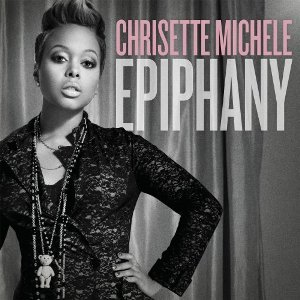

- Chrisette Michele
- Bill Withers
- Tony Bennett
Chrisette Michele

Chrisette Michele(크리셋 미셸)은 1982년 12월 8일 미국 뉴욕주 센트럴 이슬립에서 태어난 R&B 및 소울 싱어송라이터예요. 그녀는 독특하고 감성적인 목소리로 많은 사랑을 받았고, 특히 재즈, 힙합, R&B 스타일을 섞은 음악으로 주목받았어
주요 경력 및 활동
- 데뷔: 2007년 데뷔 앨범 I Am 발매.
- 그래미상 수상: 2009년 곡 Be OK로 최우수 도시/대안 퍼포먼스 (Best Urban/Alternative Performance) 부문에서 그래미상을 수상.
- 앨범:
- Epiphany (2009) — 빌보드 200 차트 1위.
- Let Freedom Reign (2010)
- Better (2013) — 그래미 후보 지명.
- 음악 스타일: 재즈, R&B, 소울, 힙합 등 다양한 장르의 요소를 결합.
- 콜라보레이션: 제이지, 나스(Nas), 릭 로스(Rick Ross) 같은 아티스트들과 작업.
논란 및 근황
2017년, 도널드 트럼프 대통령의 취임식에서 공연한 것이 논란이 되었고, 이후 많은 비판을 받았어. 그 사건 이후 커리어에 타격을 입기도 했지만, 계속해서 독립 아티스트로서 음악 활동을 이어가고 있어.